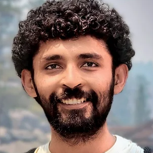
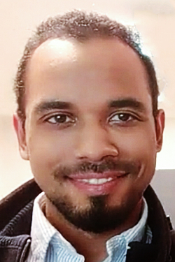

Overview
Project Team
Publications
Software
Media

Hard Data to the Model: Personalized, Diverse Preferences for Language Models
Project funded by the National Science Foundation (IIS-2403436)
PI: Jordan Boyd-Graber,
Overview
Tens of millions of Americans interact with AI tools to find information, answer questions, or help them solve problems. One key drawback of these systems is lack of personalization: since modern AI systems do not know whom they are talking to, they can only give generic answers to user questions. But the answer to the question “why is the sky blue?” should be different if the person asking the question is a college student or a young child. This project aims to enable an AI model to provide more appropriate responses to users depending on their unique backgrounds, experiences, and needs. It will first gather a diverse dataset in order to characterize what kinds of responses are preferred by different people. The project will then use these data to develop AI systems that can tailor their answers to individual users, as well as evaluate how well the AI systems personalize responses. To achieve this personalization, the AI systems will learn to explicitly represent the kind of person they are talking to, based on their background or previous interactions, and then use this representation to generate an appropriate response. This project will result in AIs that can provide personalized, specific responses based on the person asking the question as well as resources that will help other personalize AIs. These resources will include datasets of personalized questions and answers, interfaces and visualizations to understand why AI provides specific responses over others; interviews and discussions with community members to understand their needs; and code and models that will allow others to build, train, and deploy personalized AI systems.
While large language models (LLMs) trained on massive datasets have shown impressive performance on a variety of tasks, they still exhibit biases and struggle to be equally useful for everyone. While initially pre-trained on a language modeling objective, most LLMs are further fine-tuned to align their outputs with human preferences. However, existing techniques assume a “one size fits all” approach, ignoring diversity in user needs. This project will first construct probes to detect cases where models fail to adapt to the diverse needs of different users. Then, this project will develop Personalized Feedback for Diverse Populations (PFDP) to identify when models should be sensitive to the unique needs, knowledge, and background of users by examining the training trajectory of models and comparing models' answers to human preferences. PFDP will enable the development of models that can detect examples that are difficult for computers but not for humans, explain why such disparities in difficulty exist, and represent users’ needs and preferences within the model. To correct those shortcomings in the data, we focus on data curation: we propose techniques to automatically create new examples that ask questions about under-represented groups or require targeted responses to create adversarial prompt and response pairs with a human in the loop. Finally, with these new data, we develop techniques to allow modern architectures to make the most of these difficult (but few) examples. These techniques will allow for fine-tuning LLMs with a small curated subset of data that is robust to variations in prompts and will lead to the generation of acceptable answers for a diverse population of users.
<< back to top
Project Team
 |
Jordan Boyd-Graber Assistant Professor, Computer Science (Maryland) |
 |
Alvin Grissom II Associate Professor, Haverford College |
| Robin Jia Assistant Professor, University of Southern California |
|
| John P. Lalor Assistant Professor, University of Notre Dame |
|
| Swabha Swayamdipta Assistant Professor, University of Southern California |
|
| Nishant Balepur PhD Student, University of Maryland |
|
|  | Maharshi Gor PhD Student, University of Maryland |
 |
Fenfei Guo PhD Student, Computer Science (UMD) |
| Ahmed Haj Undergrad, Haverford College |
|
|  | John Kanu PhD Student, University of Maryland |
| Yoo Yeon Sung PhD Student, University of Maryland |
|
| Ryan Cook PhD Student, University of Notre Dame |
|
| Brihi Joshi PhD Student, University of Southern California |
<< back to top
Publications (Selected)
-
~~Pubs:Personalization~~
Media
-
~~Media:Personalization~~
Resources (software and datasets)
Acknowledgments
This work is supported by the National Science Foundation. Any opinions, findings, and conclusions or recommendations expressed in this material are those of the researchers and do not necessarily reflect the views of the National Science Foundation.